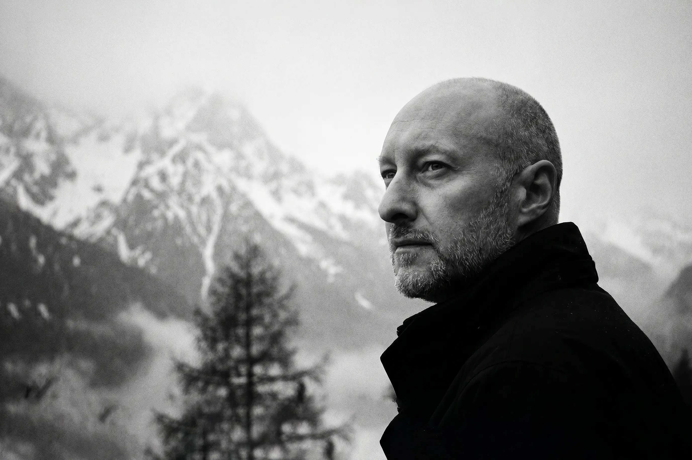
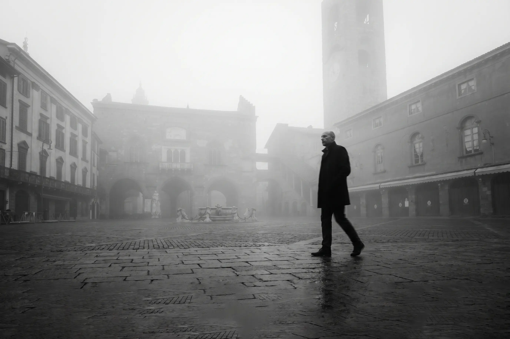
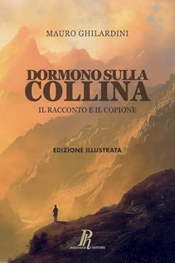
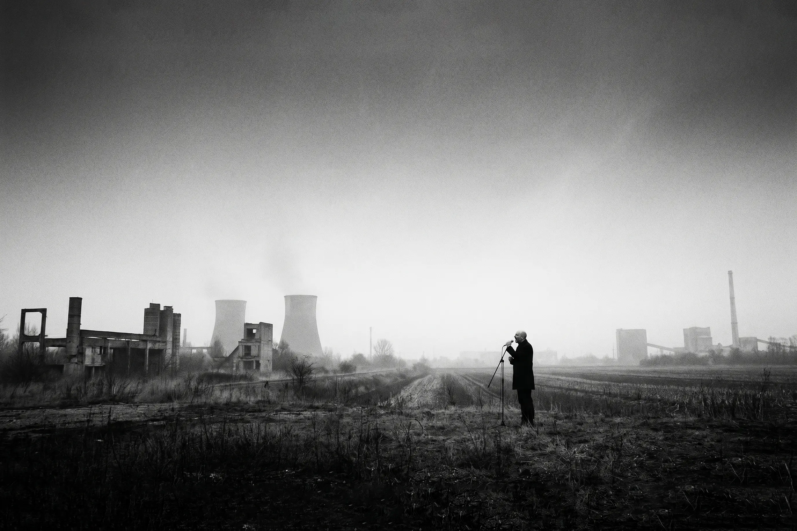

MAURO GHILARDINI
No cookies
Local preferences only
Scroll
↓
{{ manifestoLabel }}
{{ manifestoLead }}
{{ manifestoBody }}
{{ manifestoSign }}
{{ repTitle }}
{{ repSub }}
{{ repG1 }}
{{ repG2 }}
{{ repG4 }}
{{ repG3 }}
{{ discIntroLabel }}
{{ discIntro }}

{{ teachLabel }}
{{ teachTitle }}
{{ teachBody }}
{{ videoTitle }}
{{ videoCta }} →Le anteprime sono immagini locali · i link aprono YouTube in una nuova scheda · nessun cookie di terze parti

{{ bioLabel }}
{{ bioTitle }}
{{ p.t }}